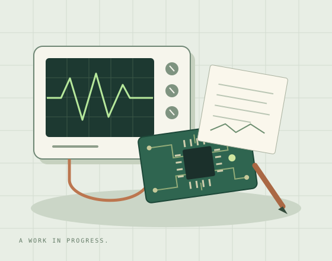

ELECTRICAL & COMPUTER ENGINEERING
Hi, I'm Mahin.
I like figuring out
how things work.
I'm studying electrical and computer engineering at UT Austin. I enjoy the point where software meets hardware, and turning what I learn into something I can actually use.
See what I'm building
01 / A LITTLE ABOUT ME
Learning by building.
I like breaking a problem into smaller pieces, testing an idea, and working through the parts that don't behave as expected. Engineering gives me a reason to keep asking questions.
This site is a small example of that process: a place to practice HTML and CSS, share a little about myself, and keep adding as I learn.
02 / WHAT KEEPS ME CURIOUS
From circuits to code.
Software
Building clear, useful interfaces and understanding the logic behind them. Lately, that means getting more comfortable with React.
Hardware
Thinking about how code interacts with physical systems, and how small design decisions affect the way a system works.
The process
Reading, experimenting, and debugging. I enjoy the moment when an idea finally makes sense because I've tried it myself.